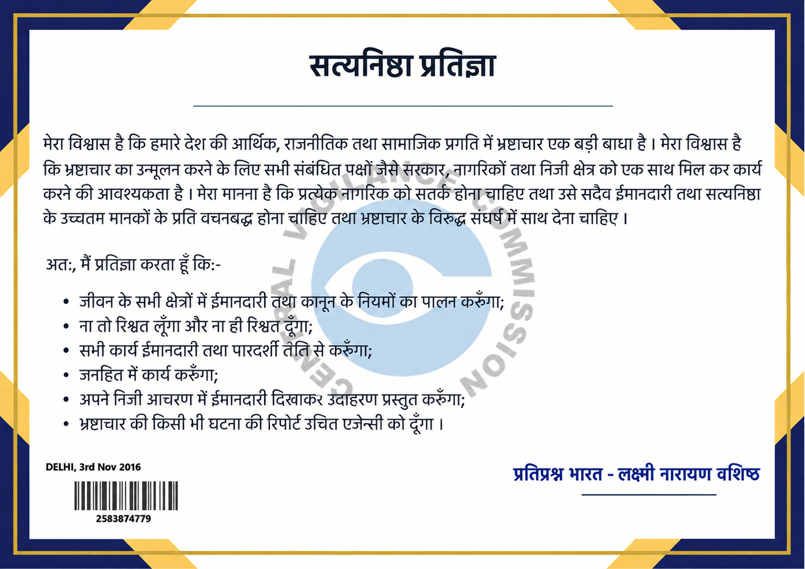

.png)
"सपने वो नहीं जो हम सोते हुए देखते हैं, सपने वो हैं जो हमें सोने नहीं देते।" — डॉ. एपीजे अब्दुल कलाम
कलाम के सपनों का भारत और सत्यनिष्ठा का उद्घोष: 15 अक्टूबर जयंती पर स्वतंत्र मंच 'प्रतिप्रश्न भारत' का शंखनाद
चौथा स्तंभ केवल सत्ता का दर्पण नहीं, बल्कि जनता की ढाल है—पारदर्शिता, निर्भीकता और संवैधानिक जवाबदेही के संकल्प के साथ एक नए युग की शुरुआत।
नई दिल्ली: 15 अक्टूबर केवल एक तारीख नहीं, बल्कि उस वैज्ञानिक चेतना, नैतिक शुचिता और अदम्य राष्ट्र-दृष्टि का स्मरण पर्व है, जिसे 'मिसाइल मैन' डॉ. एपीजे अब्दुल कलाम ने भारत की आत्मा में रोपा था। डॉ. कलाम का दृढ़ विश्वास था कि एक सशक्त, विकसित और आत्मनिर्भर राष्ट्र का निर्माण केवल गगनचुंबी इमारतों या कागज़ी घोषणाओं से नहीं, बल्कि सत्यनिष्ठा, स्वतंत्र सोच और अंतिम पंक्ति में खड़े युवा के आत्मसम्मान से होता है।
आज, जब मुख्यधारा की पत्रकारिता पर सहमति और अनुनय का दबाव स्पष्ट दिखाई देता है, ऐसे ऐतिहासिक अवसर पर 'प्रतिप्रश्न भारत' का जन्म एक औपचारिक समाचार पोर्टल के रूप में नहीं, बल्कि लोकतंत्र के चौथे स्तंभ की बुनियादी मर्यादाओं को पुनर्स्थापित करने के जन-संकल्प के रूप में हो रहा है।
1. प्रतिप्रश्न क्यों जरूरी है?
लोकतंत्र में विपक्ष केवल संसद के भीतर बैठने वाली सीटों का नाम नहीं है; लोकतंत्र का असली और सबसे सजग प्रतिपक्ष उसका स्वतंत्र मीडिया होता है। यदि नीतियाँ जनहित के विरुद्ध जाएँ, यदि युवाओं का भविष्य कागज़ी वादों में उलझे, और यदि व्यवस्था जवाबदेही से कतराए—तो वहाँ प्रतिप्रश्न उठाना पत्रकारिता का विधिक व नैतिक दायित्व बन जाता है। हमारा संकल्प किसी विचारधारा का अंध-समर्थन या अंध-विरोध करना नहीं, बल्कि संविधान की कसौटी पर हर नीति की ज़मीनी पड़ताल करना है।
.png)
लक्ष्मी नारायण वशिष्ठ
मुख्य संपादक एवं संस्थापक

केंद्रीय सतर्कता आयोग (CVC)
सत्यनिष्ठा प्रतिज्ञा (Integrity Pledge)
2. सत्यनिष्ठा का सार्वजनिक संकल्प (Integrity Pledge)
पत्रकारिता की पहली और गैर-सौदा शर्त है—व्यक्तिगत और संस्थागत शुचिता। 'प्रतिप्रश्न भारत' के मुख्य संपादक लक्ष्मी नारायण वशिष्ठ द्वारा केंद्रीय सतर्कता आयोग (CVC) के समक्ष ली गई सत्यनिष्ठा प्रतिज्ञा ही इस मंच का नैतिक संविधान है:
- न किसी प्रलोभन के आगे झुकना, न किसी अनुचित दबाव में कलम को मोड़ना।
- जीवन और कार्य के सभी क्षेत्रों में ईमानदारी तथा कानून के नियमों का पूर्ण पालन करना।
- नागरिकों के समक्ष स्वयं पारदर्शी आचरण प्रस्तुत कर भ्रष्टाचार के विरुद्ध संघर्ष में जन-आवाज़ बनना।
3. कलाम का विज़न: हमारी दिशा और वैचारिक आधार
"जिस दिन हमारी युवा पीढ़ी बिना किसी भय के सत्ता और समाज से प्रासंगिक प्रश्न पूछना शुरू कर देगी, उसी दिन वास्तविक राष्ट्र-निर्माण की नींव पड़ेगी।" — डॉ. एपीजे अब्दुल कलाम
डॉ. कलाम के लिए विकसित भारत केवल आर्थिक आंकड़ों या औद्योगिकीकरण का नाम नहीं था; उनके विज़न की आत्मा में तीन बुनियादी स्तंभ थे:
- समानता और PURA (ग्रामीण-शहरी भेद का अंत): जब तक भारत के गाँवों और अंतिम पायदान पर खड़े व्यक्ति तक आधुनिक संसाधन, गुणवत्तापूर्ण शिक्षा और स्वास्थ्य नहीं पहुँचता, तब तक विकास अधूरा है। यह मंच कागज़ी आवंटनों के बरक्स ज़मीनी यथार्थ को सामने रखेगा।
- वैज्ञानिक दृष्टिकोण (Scientific Temper): रूढ़िवादिता और कागज़ी दावों के बरक्स तर्क, अनुसंधान और तथ्य-आधारित चिंतन को बढ़ावा देना। कलाम साहब के अनुसार हर नीति का मूल्यांकन तार्किक कसौटी पर होना चाहिए।
- युवा शक्ति और स्वावलंबन: भर्ती प्रक्रियाओं में विलंब, शिक्षा तंत्र की चुनौतियाँ और युवाओं के बौद्धिक अधिकारों पर सवाल पूछना हमारी शीर्ष प्राथमिकता रहेगी।
कलाम साहब ने सिखाया था कि सच्चा देशभक्त वह है जो अपने देश की कमियों पर पर्दा डालने के बजाय उन्हें सुधारने के लिए कड़वे सच का सामना करे। 'प्रतिप्रश्न भारत' उसी वैज्ञानिक चेतना और निडरता को अपनी कलम बनाएगा। यह मंच आपका है, आपके सवालों का है।